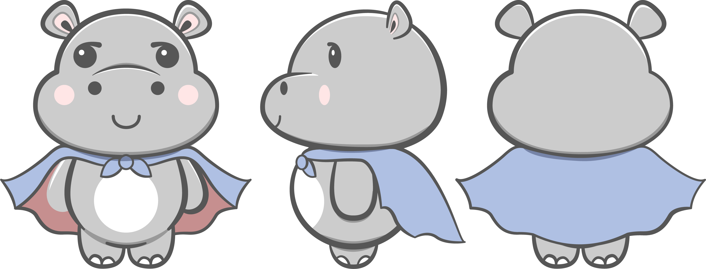
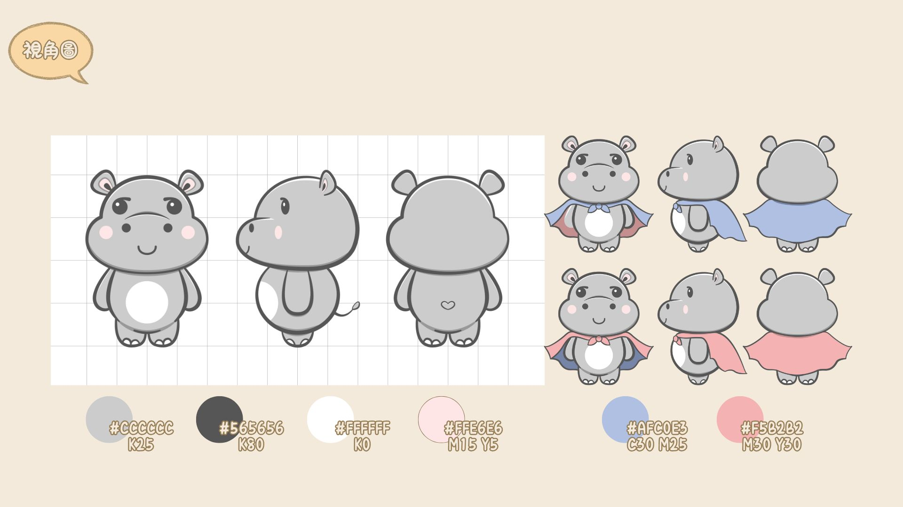
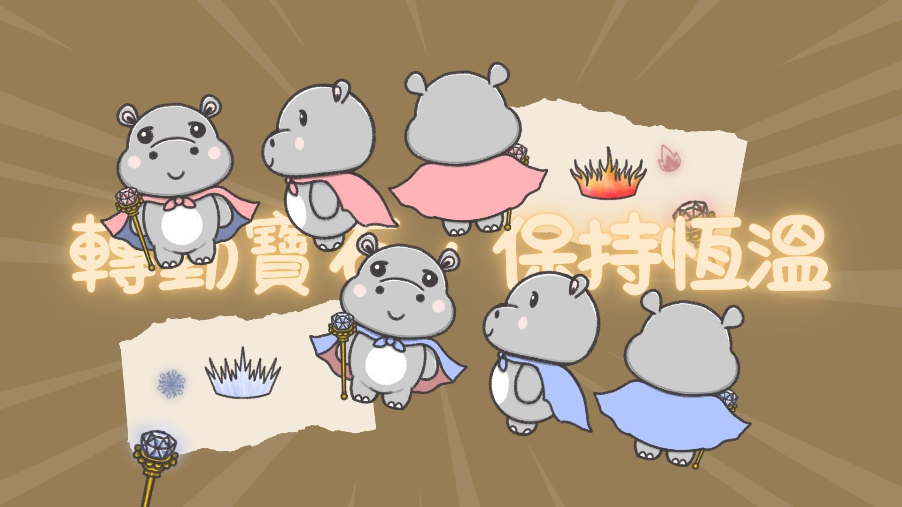
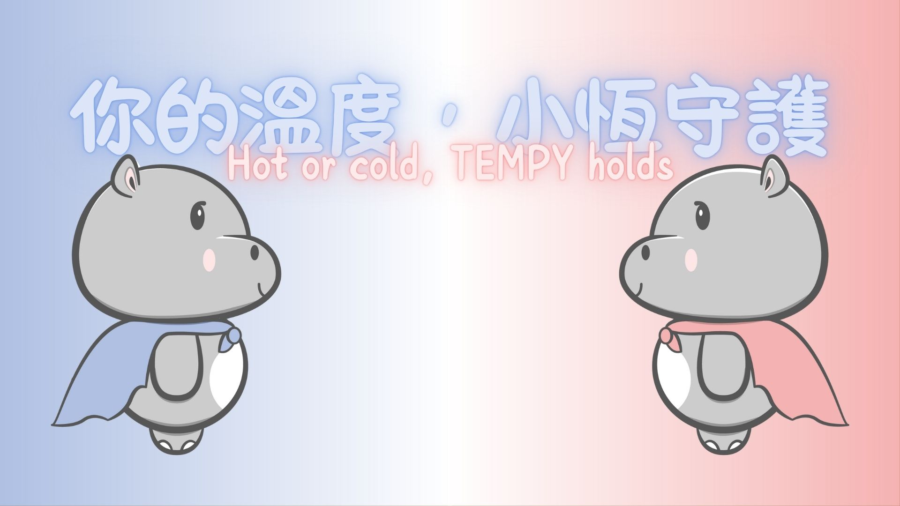

Tempy（小恆）是為保溫杯品牌量身打造的品牌吉祥物 IP，以河馬為造型原型。「小恆」取「恆溫」之意，象徵持久穩定的守護；英文名 Tempy 則由 Temperature（溫度）與 Empathy（同理心）合體，傳遞溫度與情感的雙重守護。
以 5W1H 分析框架為骨架，系統性地建立 Tempy 的背景故事、個性特質與視覺形象，最終延伸出完整的行銷應用規範，確保吉祥物在各媒介中保持一致的品牌識別。
你的溫度，小恆守護
Hot or cold, Tempy holds.
吉祥物角色背景
背景故事
小恆來自一座名為「恆溫島」的神秘之地——那裡四季永遠保持完美平衡，冷熱交融而不衝突。在那座島上成長的小恆，天生擁有「冷暖平衡」的天賦，能夠感知並守護任何事物的溫度狀態。
某一天，小恆離開恆溫島，踏上旅程，將這份守護溫度的力量帶給世界上每一個需要「恆溫陪伴」的人。
溫度守恆力——不主動改變飲品溫度，而是以穩定的守護力量延長冷熱狀態。就如保溫杯本身：不創造溫度，只忠實守護溫度。
雙色雙面披風（暖面橙紅 / 冷面藍白）＋ 調節手杖（旋轉末端顯示太陽或雪花）
暖色圍巾 ＋ 蒸氣效果 ＋ 火焰冠（橙紅王冠）
性格：溫柔耐心，如冬日暖陽般穩定陪伴
冰晶項圈 ＋ 雪花冰霜裝飾 ＋ 冰晶冠（冷藍色）
性格：活潑爽朗，如夏日涼風般輕快靈動
企劃分析（5W1H 框架）
Who
目標族群
20–40 歲上班族、學生、戶外運動愛好者
重視健康與便利性的生活型態；次要族群為家庭主婦與家長，尋求可全年使用的日常用品。
Why
企劃目的
傳達保冷保暖雙功能、建立人性化品牌形象
演繹從炎夏到嚴冬的四季使用場景；透過吉祥物 IP 注入品牌溫度，與市場競爭者形成差異。
What
產品核心
高效雙功能保溫杯 ＋ IP 限量版設計
核心產品提供高效保冷／保暖雙功能；延伸推出結合四季主題與吉祥物 IP 的限量款，增加收藏價值。
Where
推廣通路
線上平台 ＋ 線下活動 ＋ 周邊商品
品牌官網、社群媒體趣味漫畫；傳統廣告、宣傳 DM、快閃活動吉祥物人偶裝；IP 設計印製於杯體、包裝及周邊配件。
When
推廣時機
全年配合季節輪替 ＋ 節慶集中爆發
隨季節推出專屬主題內容；重點鎖定夏季旅遊旺季，以及冬季聖誕與新年購物季。
How
執行方式
動畫 × 社群 × 商品 × 活動
製作動畫短片與視覺吸睛的靜態插畫；設計吉祥物貼圖、GIF 提升社群互動；將吉祥物融入杯體設計與附加配件；快閃活動現身加強現場記憶點。
吉祥物設計展示



點擊圖片可放大檢視